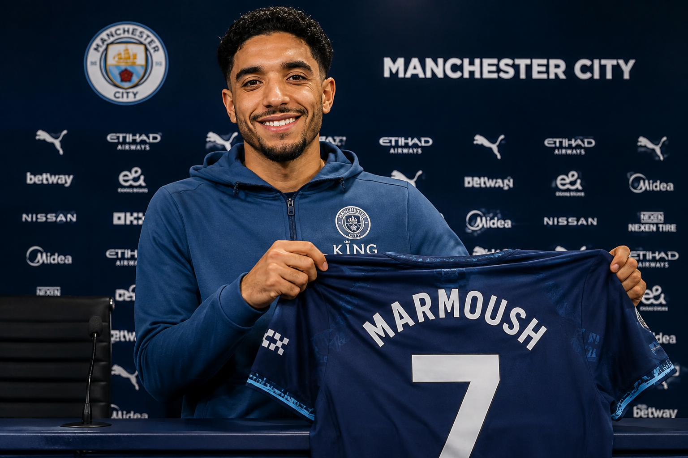

Tottenham have signed Manchester City forward Omar Marmoush on loan until the end of the season, with an obligation to make the deal permanent for £60m next summer.
The 27-year-old Egypt international will join former City team-mate Savio at Spurs, after the Brazilian moved to north London for an initial fee of £75m...
"Tottenham Hotspur is one of the biggest clubs in England, if not the world, and the project was very attractive to me," said Marmoush. "I've spoken with the head coach..."
Continue Reading Full Coverage on BBC Sport ►